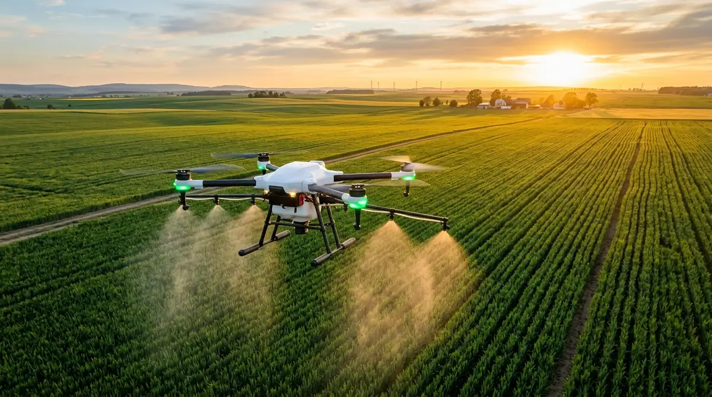
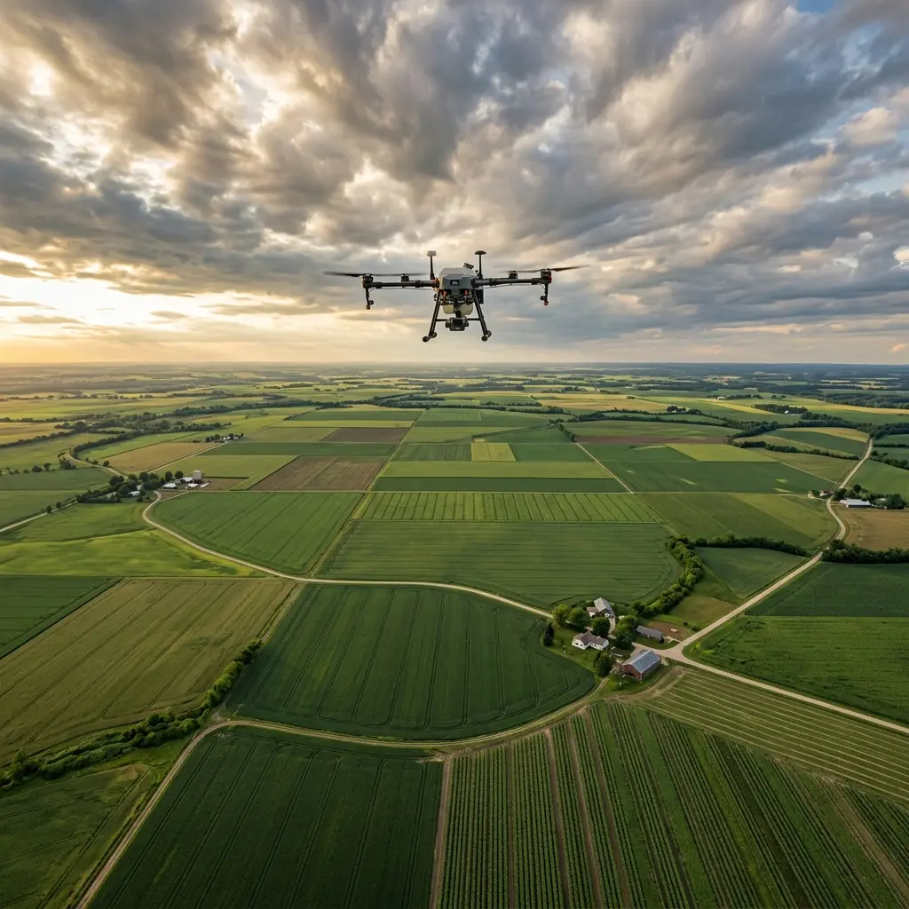
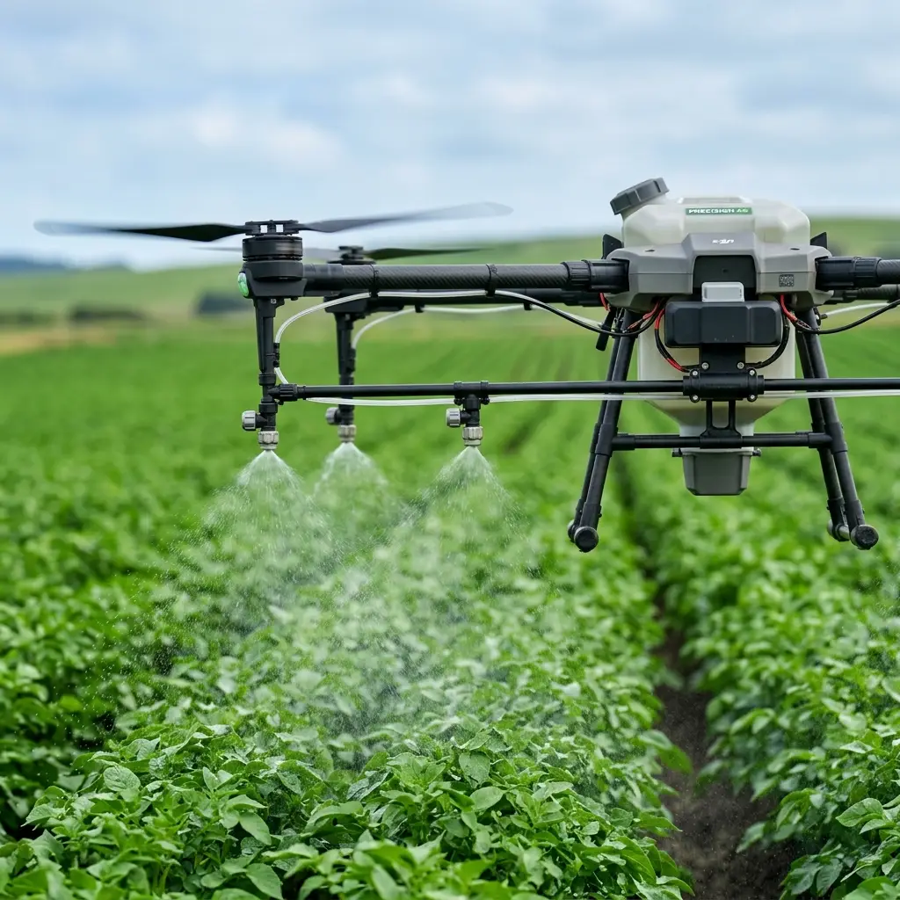
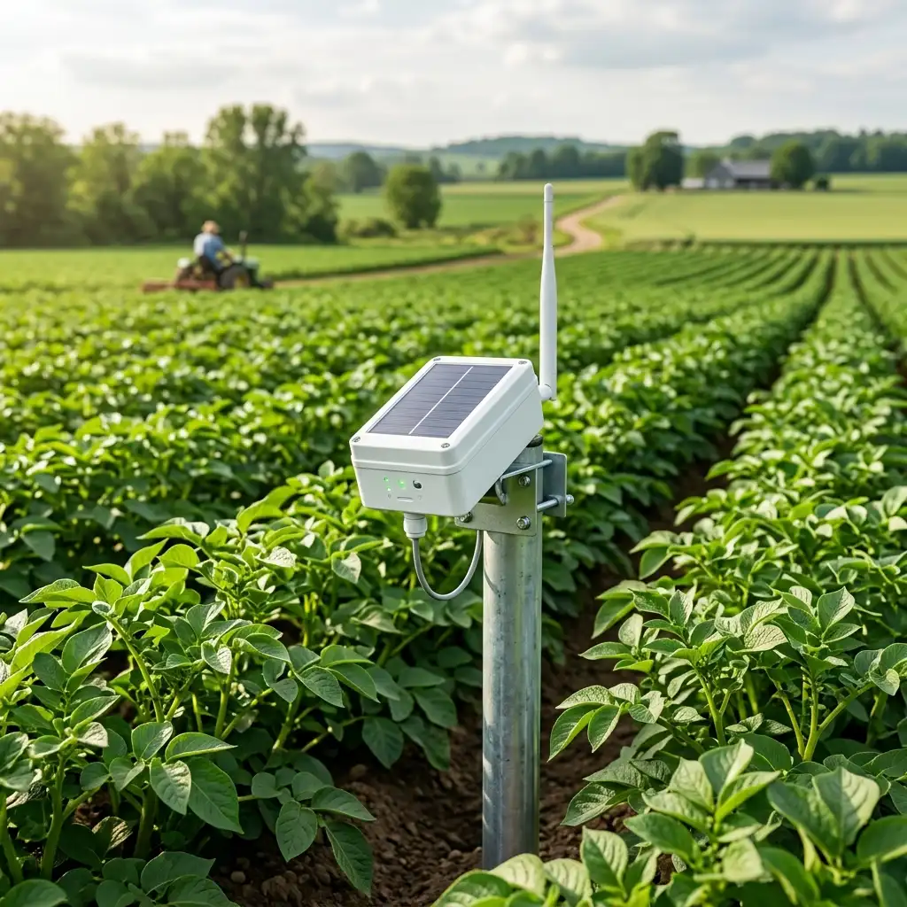
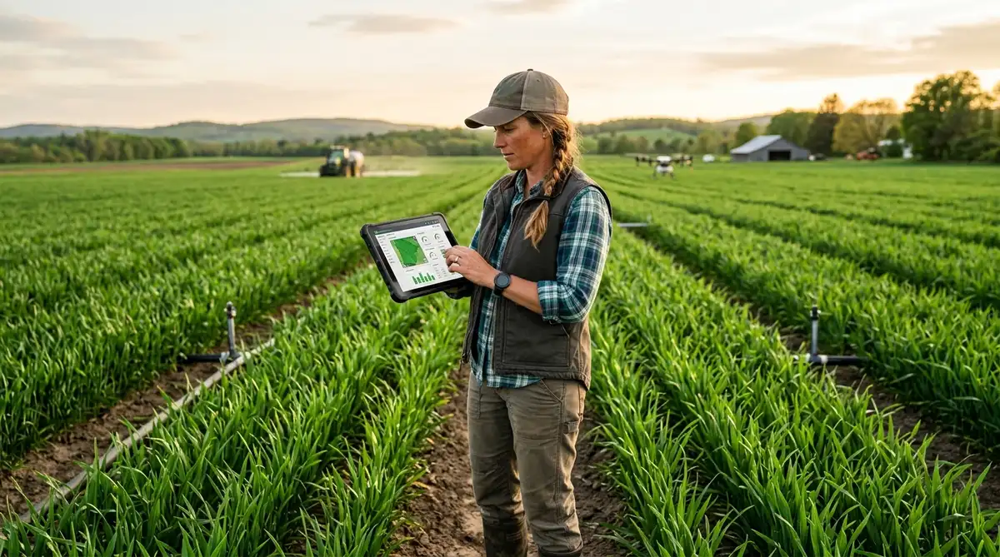
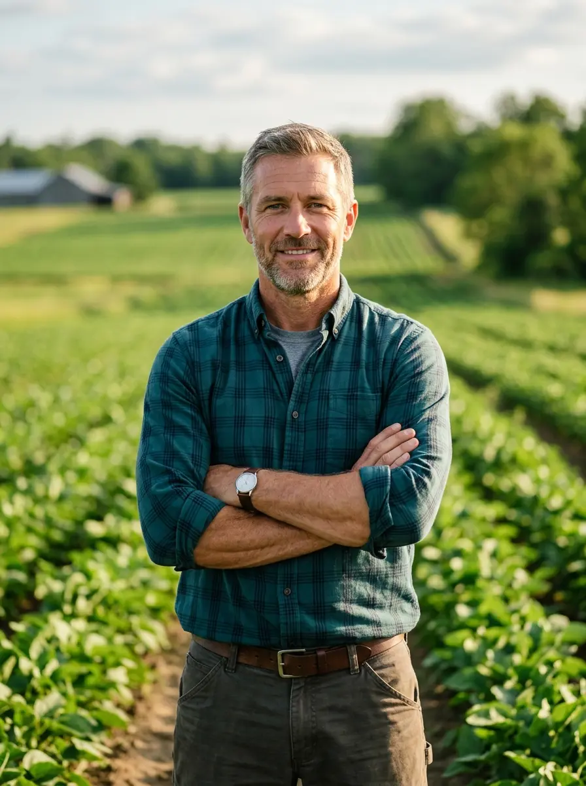
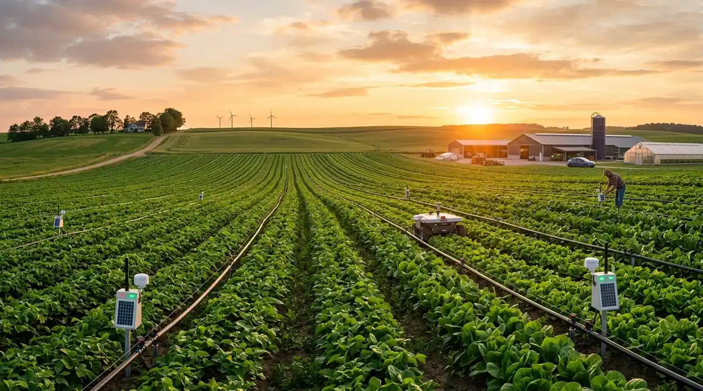

Loading

Empowering farmers, optimizing crop yields, and protecting ecosystems with cutting-edge drone technology and precision agriculture tools for a sustainable future.

We harness advanced drone technology and precision agriculture tools to empower farmers, protect ecosystems, and build sustainable food systems. By combining innovative engineering with environmental responsibility, we help rural communities reduce waste, improve efficiency, and maximize crop harvest throughout the season.
We are committed to transforming traditional farming practices through intelligent automation, drone-powered precision spraying, and data-driven crop health insights that maximize yield while minimizing environmental impact.
Acres monitored and treated using our precision drone fleet, helping over 50,000 farmers achieve record crop yields with 40% less chemical usage.
Our integrated drone ecosystem provides comprehensive agricultural management from precision monitoring to sustainable farming practices.
Explore ServicesReal-time aerial imaging and multispectral analysis enables farmers to detect crop stress, nutrient deficiencies, and pest infestations before they become visible to the naked eye.
GPS-guided precision spraying reduces chemical usage by up to 40% while ensuring every plant receives exactly the treatment it needs for optimal growth.
Our drones cover up to 100 acres per hour, dramatically reducing the time and labor needed for field monitoring and treatment applications.
By minimizing chemical runoff and optimizing resource usage, our solutions help farmers transition to environmentally responsible practices without sacrificing productivity.
Cutting-edge drone systems and IoT sensors working together to revolutionize agricultural productivity.

GPS-guided drone spraying systems that apply pesticides and fertilizers with pinpoint accuracy, reducing waste by 40%.

IoT-enabled soil sensors that continuously monitor moisture levels, nutrient content, and pH balance in real-time.
High-altitude surveillance drones with multispectral cameras that capture detailed crop health data across thousands of acres.
Through advanced drone technology and smart farming innovations, we have helped thousands of farmers optimize operations.
Our drones create high-resolution aerial maps of your entire property, identifying terrain variations and optimal planting zones.
Autonomous drones are deployed based on intelligent scheduling, covering maximum acreage with minimal flight time.
Multispectral imaging captures detailed crop health data, detecting early signs of disease and nutrient deficiency.
Based on analyzed data, targeted interventions are executed from precision spraying to irrigation adjustments.


"I've been farming for over 18 years, and adopting drone technology transformed how we manage our crops. Real-time monitoring and data-driven spraying helped us reduce costs, improve efficiency, and expand our harvest throughout the season."
Smart Technology, Better Harvests — Join thousands of farmers using Stackly to optimize their operations.
Agricultural drones provide aerial monitoring, precision spraying, and crop health analysis. They help farmers detect issues early, optimize chemical usage, and improve yield by up to 30%.
Our drones collect multispectral imagery, thermal data, NDVI maps, elevation models, and high-resolution photographs to identify crop stress and pest infestations.
Yes! Precision spraying technology reduces chemical usage by up to 40% by applying treatments only where needed, saving costs and protecting the environment.
Absolutely. Our drone fleet can cover up to 100 acres per hour, ideal for large-scale farming. We offer enterprise plans for farms exceeding 1,000 acres.
We recommend weekly monitoring during active growing seasons and bi-weekly during dormant periods. Our scheduling system automatically plans optimal flight paths.
Not at all. Our platform is designed for simplicity. Farmers receive easy-to-understand reports and actionable recommendations through our dashboard.

Explore how agricultural drones are revolutionizing crop management through precision monitoring and real-time data analytics.
Discover the five key methods drone surveillance enhances crop health detection, pest identification, and yield prediction.
Learn how GPS-guided precision spraying reduces chemical waste by 40% while maintaining maximum crop protection.